Hi, my name is Ethan Labbe, and I am a third-year Electrical Engineering student. I was born and raised in Edmonton, Alberta, and have a passion for various technical areas, such as fusion energy, control and automation, artificial intelligence, math, and radio frequency communications. I have a strong foundation in engineering and a wide variety of skills from circuit design to programming, which I have learned at the University of Alberta. See my projects below to learn more about my work.
This project is a general automation software designed to automate and streamline online processes. It is being programmed in Python and incorporates applications of data collection, web scraping, and automation on top of the machine learning framework. This project is currently in a preliminary stage... more to come soon.
For this project, I am researching and addressing the issues of inertial confinement fusion fuel targets. It was created and funded under the Dean's Research Award and is supervised by Dr. Ying Tsui. The aim is to find solutions to the cost and quality control issues of the current manufacturing methods using laser light scattering and spectrum analysis to determine the quality of polystyrene fusion fuel targets.
I am designing and building an automated solar panel system that rotates to the optimal angle based on light detected from the sun using photoresistors. This project uses an Arduino board to calculate and send signals to servo motors to rotate based on C++ code. The aim of the project is to maximize output from a single solar panel by experimenting with solar PVs to determine if overall net energy output increases from automating solar PVs.
UAVCS is a Python program developed with the assistance of Dr. James Myatt for the Dean's Research Award. This project involves creating a control simulation for a 6-degree of freedom underwater vehicle, focusing on control theory, Python programming, and underwater vehicle dynamics. By understanding the physics of an underwater vehicle, I created graphical simulations by solving a system of differential equations to predict the vehicle's depth under varying conditions. Below are the autonomous vehicle CAD design and simulations.
Email: elabbe@ualberta.ca 